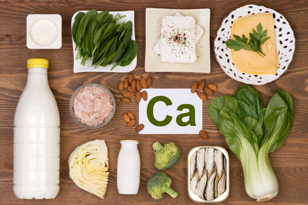
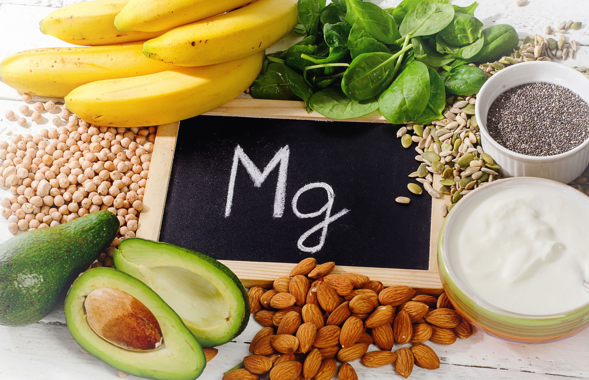
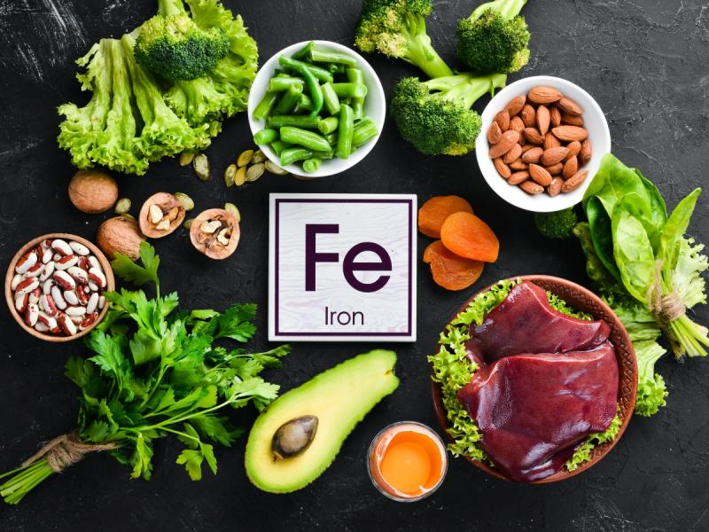
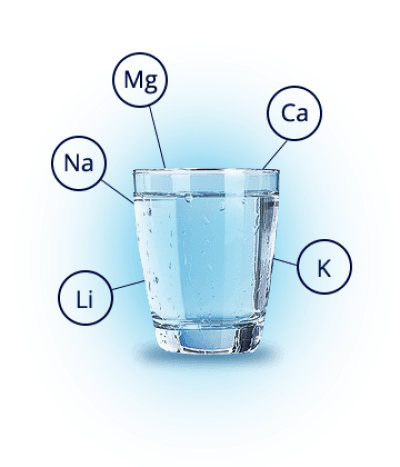

4.2 Rola witamin
Nieorganiczne składniki pokarmowe
Witaminy i sole mineralne to składniki pokarmowe, które - choć potrzebne w małych ilościach - są niezbędne dla
prawidłowego funkcjonowania naszego organizmu. Jak wiesz, równie ważne dla zachowania zdrowia jest utrzymanie
właściwego bilansu wodnego.
stopCzym są witaminy?
Witaminy to związki organiczne, których organizm w większości nie potrafi
sam wytworzyć, a są one wykorzystywane w różnych reakcjach biochemicznych i procesach fizjologicznych.
Dzielimy je na:
play_arrow
Rozpuszczalne w tłuszczach - należą do nich witaminy: A, D3, E, K,
play_arrow
Rozpuszczalne w wodzie - należą do nich witaminy z grupe B oraz witamina C.
Witaminy są potrzebne w niewielkich ilościach Ich głównym zródłem jest spożywany pokarm. Niektóre
witaminy z grupe B są wytwarzane przez bakterie żyjące w naszym przewodzie pokarmowym. Inne, np.
witaminę A czy witaminę D3, organizm syntetyzuje z substancji nazywanych
prowitaminami.
Stan, w którym w organizmie brakuje witamin, nazywamy awitaminozą,
a niedobór witamin - hipowitaminozą. Przyczyną niedoboru witamin mogą być:
play_arrow
Niewłaściwa dieta,
play_arrow
Zwiększone zapotrzebowanie na Witaminy, np. w czasie choroby lub ciąży,
play_arrow
Trudności w przyswajaniu witamin, np. z powodu występowania w organizmie związków, które blokują ich wchłaniane.
Zarówno brak, jak i niedobór witamin jest szkodliwy dla organizmu.
Podobnie negatywne skutki może mieć nadmiar witamin, czyli
hiperwitaminoza. Jest ona zazwyczaj spowodowana nadużywaniem suplementów
diety i leków zawierających witaminy.
Hiperwitaminoza dotyczy główne witamin rozpuszczalnych w tłuszczach, które są kumulowane w tkance tłuszczowej
i magazynowanie w wątrobie. Witaminy rozpuszczalne w wodzie jest trudniej przedawkować, gdyż ich nadmiar jest
wydalany z organizmu z moczem.
Promieniowanie słoneczne powoduje przekształcanie prowitaminy D3 występującej w skórze w witeminę D3
Karoten - pomarańczowy barwnik występujący m.in. w marchewce - to prowitamin A przekształcana w organizmie w witaminę A.
Jakie funkcje pełnią witaminy?
Głównym zadaniem witamin jest regulowanie procesów zachodzących w organizmie. Częśc witamin jest też
niezbędna do prawidłowego funkcjonowania enzymów, które biorą udział w tak istotnych procesach, jak
oddychanie tlenowe. Niedobór każdej witaminy powoduje kreślone skutki. Aby im zapobiegać, powinniśmy
stosować zróżnicowaną dietę.
stopWitaminy rozpuszczalne w tłuszczach - A, D3, E, K
Witamina A

Witamina D3

Witamina E

Witamina K

Funkcje: jest niezbędna do prawidłowego widzenia,
właściwego funkcjonowania nabłonków oraz wzrostu i rozwoju organizmu.
Skutki niedoboru: kurza ślepota (niedowidzenie o zmierzchu i przy słabym oświetleniu), łuszczenie się nabłonków, zaburzenia wzrostu.
Zródła: nabiał, pomarańczowe warzywa i owoce, ciemnozielone warzywa, wątroba, tran.
Skutki niedoboru: kurza ślepota (niedowidzenie o zmierzchu i przy słabym oświetleniu), łuszczenie się nabłonków, zaburzenia wzrostu.
Zródła: nabiał, pomarańczowe warzywa i owoce, ciemnozielone warzywa, wątroba, tran.
Witamina D3
Funkcje: zwiększa wchłanianie wapnia i fosforu
z przewodu pokarmowego, powoduje odkładanie się tych pierwiastków
w kościach i zębach.
Skutki niedoboru: u dzieci - krzuwica, u dorosłych - osteoporoza (demineralizacja kości).
Zródła: tran, jaja, tłuste ryby, wątroba, mleko.
w kościach i zębach.
Skutki niedoboru: u dzieci - krzuwica, u dorosłych - osteoporoza (demineralizacja kości).
Zródła: tran, jaja, tłuste ryby, wątroba, mleko.
Witamina E
Funkcje: zmniejsza ryzyko zachowania na nowotwory,
zapewnia prawidłową pracę mięśni, poprawia płodność.
Skutki niedoboru: wczesne starzenie się skóry, zaburzenia płodności, niedokrwistość, osłabienie i zanik mięsni.
Zródła: oleje roślinne, migdały, awokado, jaja, orzechy, nasiona.
Skutki niedoboru: wczesne starzenie się skóry, zaburzenia płodności, niedokrwistość, osłabienie i zanik mięsni.
Zródła: oleje roślinne, migdały, awokado, jaja, orzechy, nasiona.
Witamina K
Funkcje: bierze udział w procesie krzepnięcia krwi.
Skutki niedoboru: krwawienia, np. dziąseł, nosa i jelit.
Zródła: wątroba, zielone warzywa.
Skutki niedoboru: krwawienia, np. dziąseł, nosa i jelit.
Zródła: wątroba, zielone warzywa.
stopWitaminy rozpuszczalne w wodzie.
Witaminy z grupy B oraz witamina C
Witaminy z grupy B

Witamina B2

Witamina B3 (PP)

Witamina B6

Biotyna (witamina H)

Witamina B12

Kwas foliowy

Witamina C (kwas askorbinowy)

Witaminy z grupy B często występują wspólnie w pożywieniu i pełnią podobne funkcje.
Są niezbędne m.in. do prawidłowego działania układu nerwowego.
Zródła: produkty zbożowe, nasiona, orzechy, drożdże, rośliny strączkowe, jaja, mięso, wątroba.
Zródła: produkty zbożowe, nasiona, orzechy, drożdże, rośliny strączkowe, jaja, mięso, wątroba.
Witamina B2
Funkcje: bierze udział w oddychaniu tlenowym i syntezie
hemoglobiny, poprawia stan skóry i przyspiesza gojenie się ran.
Skutki niedoboru: zajady w kącikach ust, łysienie, łojotki skórne.
Skutki niedoboru: zajady w kącikach ust, łysienie, łojotki skórne.
Witamina B3 (PP)
Funkcje: warunkuje prawidłową pracę układu pokarmowego
i układu nerwowego.
Skutki niedoboru: pękanie i łuszczenie się skóry, biegunka, otępienie.
Skutki niedoboru: pękanie i łuszczenie się skóry, biegunka, otępienie.
Witamina B6
Funkcje: bierze udział w oddychaniu tlenowym,
wpływa korzystnie na stan skóry i prawidłową pracę tkanki nerwowej, uczestniczy w produkcji hemoglobiny i
czerwonych krwinek.
Skutki niedoboru: drgawki, apatia, obniżenie nastroju, anemia.
Skutki niedoboru: drgawki, apatia, obniżenie nastroju, anemia.
Biotyna (witamina H)
Funkcje: jest potrzebna do syntezy kwasów tłuszczowych, poprawia stan skóry
Skutki niedoboru: wypadanie włosów, łuszczenie się skóry, bóle mięśni.
Skutki niedoboru: wypadanie włosów, łuszczenie się skóry, bóle mięśni.
Witamina B12
Funkcje: reguluje proces powstawania krwinek, uczestniczy wapnia
biosyntezie kwasów nukleinowych.
Skutki niedoboru: anemia złośliwa, uszkodzenia układu nerwowego.
Skutki niedoboru: anemia złośliwa, uszkodzenia układu nerwowego.
Kwas foliowy
Funkcje: uczestniczy w biosyntezie kwasów nukleinowych i produkcji krwinek.
Skutki niedoboru: większe prawdopodobieństwo urodzenia dziecka z wadą układu nerwowego, niedokrwistość.
Skutki niedoboru: większe prawdopodobieństwo urodzenia dziecka z wadą układu nerwowego, niedokrwistość.
Witamina C (kwas askorbinowy)
Funkcje: wzmacnia zęby, aktywuje niektóre enzymy, wpływa korzystnie na stan skóry.
Skutki niedoboru: szkorbut.
Zródła: natka pietruszki, wiele owoców, czarna porzeczka.
Skutki niedoboru: szkorbut.
Zródła: natka pietruszki, wiele owoców, czarna porzeczka.
stopSkładki mineralne
Składniki mineralne to pierwiastki niezbędne do prawidłowego funkcjonowania organizmu.
Nie są wytwarzane w organizmie, dlatego muszą zostać dostarczone z pożywieniem. Składniki mineralne są
wykorzystywane przez organizm do budosy własnych związków. Wpływają na utrzymanie odpowiedniego pH i ciśnienia
osmotycznego płynów ustrojowych.
W zalezności od ilości, w jakiej występują w organizmie, wśród składników mineralnych wyrózniamy:
play_arrow
makroelementy - pierwiastki, które stanowię 0.01% lub więcej suchej masy ciała.
Zaliczamy do nich pierwiastki biogenne tworzące związki organiczne: więgiel (C), wodór (H), tlen (O), azot (N),
fosfor (P) i siarkę (S). Pozostałe makroelementy to: wapń (Ca), magnez (Mg), potas (K), sód (Na) i chlor (Cl).
play_arrow
mikroelementy - pierwiastki, których ilości w organizmie jest niższa niż 0.01%
suchej masy ciała. Zaliczamy do nich m.in. żelazo (Fe), miedz (Cu), jod (I), fluor (F) oraz kobalt (Co).
stopMakroelementy
Wapń
Funkcje: buduje kości i zęby.
Skutki niedoboru: próchnica zębów, krzywica, osteoporoza.
Zródła: nabiał, ryby, migdały.

Skutki niedoboru: próchnica zębów, krzywica, osteoporoza.
Zródła: nabiał, ryby, migdały.
Magnez
Funkcje: jest niezbędny do prawidłowego działania komórek nerwowych i mięśniowych.
Skutki niedoboru: zaburzenia pracy serca.
Zródła: produkty zbożowe.

Skutki niedoboru: zaburzenia pracy serca.
Zródła: produkty zbożowe.
Potas
Funkcje: bierze udział w przewodzeniu impulsów nerwowych.
Skutki niedoboru: zaparcia, utrata apetytu, zmęczenie.
Zródła: pomidory, orzechy, suszone owoce.
Skutki niedoboru: zaparcia, utrata apetytu, zmęczenie.
Zródła: pomidory, orzechy, suszone owoce.
Sód i chlor
Funkcje: uczestniczą w regulowaniu ciśnienia krwi oraz ilości wody.
Skutki niedoboru: niedobór praktycznie nie występuje
Zródła: sól kuchenna
Skutki niedoboru: niedobór praktycznie nie występuje
Zródła: sól kuchenna

stopMikroelementy
Żelazo
Funkcje: jest składnikiem hemoglobiny i wielu enzymów.
Skutki niedoboru: anemia, osłabienie, zawroty głowy.
Zródła: mięso, wątroba, zielone warzywa.

Skutki niedoboru: anemia, osłabienie, zawroty głowy.
Zródła: mięso, wątroba, zielone warzywa.
Jod
Funkcje: jest potrzebny do produkcji hormonów tarczycy.
Skutki niedoboru: zaburzenia funkcjonowania tarczycy.
Zródła: ryby morskie, owoce morza, sól jodowana.
Skutki niedoboru: zaburzenia funkcjonowania tarczycy.
Zródła: ryby morskie, owoce morza, sól jodowana.
Fluor
Funkcje: buduje kości i zęby.
Skutki niedoboru: zwiększona podatność zębów na próchnicę.
Zródła: ryby, herbata, woda mineralna, produkty zbożowe.
Skutki niedoboru: zwiększona podatność zębów na próchnicę.
Zródła: ryby, herbata, woda mineralna, produkty zbożowe.
Filmik o witaminach i składnikach mineralnych
stopWoda - główny związek nieorganiczny
Woda jest związkiem, który występuje w naszym organizmie w największej ilości - stanowi średnio ok.65% jego masy.
Poszczególne tkanki i narządy różnią się jej zawartością - najmniej wody znajduje się w szkliwie zębów, a najwięcej
- we krwi i w limfie.
stopWoda - główny związek nieorganiczny
Woda ma wyjątkowe właściwości fizykochemiczne, co sprawia, że pełni w organizmie wiele istotnych funkcji, m.in.:
play_arrow
jest bardzo dobrym rozpuszczalnikiem,
play_arrow
ma duże ciepło właściwe,
play_arrow
ma wysokie ciepło parowania,
play_arrow
ma duże napięcie powierzchniowe.
Woda może być także cennym zródłem składników mineralnych. Bez wody człowiek może przeżyć bardzo krótko - w zależności
od warunków i klimatu maksymalnie 6-7 dni!

Do deficytu wody w organizmie mogą przyczyniać się:
play_arrow
gorączka, wymioty, biegunka.
play_arrow
nadmierna aktywność fizyczna.
play_arrow
zbyt wysoka temperatura otoczenia.
stopBilans wodny
Bilans wodny to różnica pomiędzy ilością wody pobranej a ilością wody utraconej przez organizm w ciągu doby.
Bilans powinien wynosić zero, co oznacza, że powinniśmy dostarczać organizmowi
tyle wody, ile jej tracimy.
Dobowy bilans wodny człowika
| Pobieranie wody [ml] | Wydanie wody [ml] |
|---|---|
| z napojami - 1500 | przez skórę - 400 |
| z pokarmem - 800 | przez płuca - 500 |
| woda metaboliczna - 250 | z moczem - 1500 |
| z kałem - 150 | |
| Razem - 2550 | Razem - 2550 |
Ilości wody w organizmie jest regulowana przez ośrodek pragnienia znajdujący się w podwzgórzu.
Szczegółowo proces regulacji ilości wody w organizmie omówimy w rodziale dotyczącym układu moczowego.
Zacznąć Test